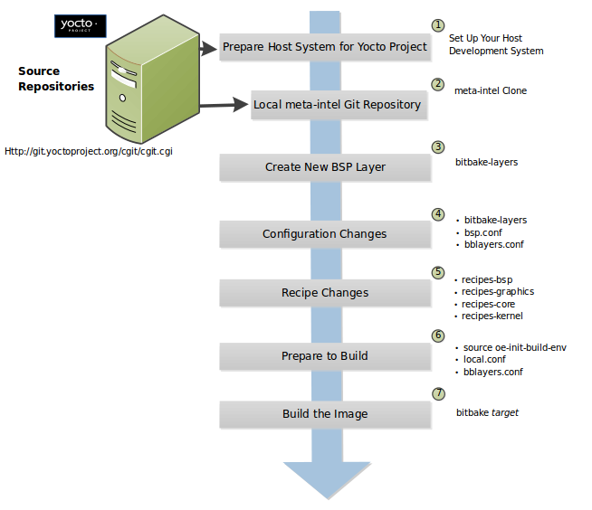

1 Manuale del Board Support Package (BSP) di Yocto Project
Un Board Support Package (BSP) è una raccolta di informazioni che definisce come supportare un particolare dispositivo hardware, un insieme di dispositivi o una piattaforma hardware. Il BSP include informazioni sulle funzionalità hardware presenti sul dispositivo, su eventuali bootloader essenziali, sulla configurazione del kernel e del device tree, nonché su tutti i driver hardware aggiuntivi necessari. Il BSP elenca anche tutti i componenti software aggiuntivi richiesti, oltre a uno stack software Linux generico per le funzionalità essenziali e opzionali della piattaforma.
Questa guida presenta informazioni sui layer BSP, definisce una struttura per i componenti in modo che i BSP seguano un layout comunemente compreso, illustra come personalizzare una ricetta per un BSP, affronta le licenze BSP e fornisce informazioni su come creare un layer BSP utilizzando il tool bitbake-layers.
1.1 Layer BSP
Un BSP è costituito da una struttura di file all'interno di una directory di base. Nel loro insieme, la directory base, la sua struttura di file e il suo contenuto possono essere considerati come un layer BSP. Sebbene non sia un requisito rigoroso, i layer BSP in Yocto Project utilizzano la seguente convenzione di denominazione consolidata:
meta-bsp_root_name
La stringa "meta-" viene anteposta al nome della macchina o della piattaforma, che nella forma sopra riportata è "bsp_root_name".
Nota
Poiché la convenzione di denominazione dei layer BSP è ben consolidata, è consigliabile seguirla durante la creazione dei layer. Tecnicamente parlando, il nome di un layer BSP non deve necessariamente iniziare con meta-. Tuttavia, diversi script e strumenti nell'ambiente di sviluppo di Yocto Project presuppongono questa convenzione.
Per comprendere meglio il concetto di layer BSP, si considerino i BSP supportati e forniti da Yocto Project in ogni release. È possibile visualizzare i layer nei repository sorgente di Yocto Project (vedere I Repository del Codice Sorgente di Yocto Project) tramite un'interfaccia web all'indirizzo https://git.yoctoproject.org/. Accedendo a quell'interfaccia, si troverà un elenco di repository sotto la voce "Yocto Metadata Layers".
Nota
I layer non più attivamente supportati da Yocto Project compaiono sotto la voce "Yocto Metadata Layer Archive."
Ogni repository corrisponde a un layer BSP supportato da Yocto Project (ad esempio, meta-raspberrypi e meta-intel). Ciascuno di questi layer è un repository a sé stante e cliccando sul nome del layer vengono visualizzati due URL da cui è possibile clonare il repository del layer sul proprio sistema locale. Ecco un esempio che clona il layer BSP Raspberry Pi:
$ git clone https://git.yoctoproject.org/meta-raspberrypi
Oltre ai layer BSP, il layer meta-yocto-bsp fa parte di meta-yocto. Il layer meta-yocto-bsp gestisce diversi BSP di riferimento, tra cui il Beaglebone basato su ARM e versioni generiche di macchine IA a 32 e 64 bit.
Per informazioni sul tipico flusso di lavoro di sviluppo BSP, consultare la sezione Sviluppo di un Board Support Package (BSP). Per ulteriori informazioni su come configurare una copia locale dei file sorgente da un repository Git, consultare la sezione Setting Up the Poky Reference Distro Manually nel Manuale di Sviluppo dei Task di Yocto Project.
La directory base del layer BSP (meta-bsp_root_name) è la directory radice di quel layer. Questa directory è quella che si aggiunge alla variabile BBLAYERS nel file build/conf/bblayers.conf che si trova nella Build Directory, che viene creata dopo aver eseguito lo script di configurazione dell'ambiente di build di OpenEmbedded (ovvero oe-init-build-env). L'aggiunta della directory radice consente a OpenEmbedded Build System di riconoscere il layer BSP e da esso di creare un'immagine. Ecco un esempio:
BBLAYERS ?= " \
/usr/local/src/yocto/meta \
/usr/local/src/yocto/meta-poky \
/usr/local/src/yocto/meta-yocto-bsp \
/usr/local/src/yocto/meta-mylayer \
"
Nota
L'ordine e il BBFILE_PRIORITY per i layer elencati in BBLAYERS sono importanti. Ad esempio, se più layer definiscono una configurazione macchina, il sistema di build OpenEmbedded utilizza l'ultimo layer cercato, a parità di priorità. Il sistema di build procede dall'alto verso il basso, attraverso i layer elencati in BBLAYERS.
Alcuni BSP richiedono o dipendono da layer aggiuntivi oltre al layer radice del BSP per essere funzionanti. In questo caso, è necessario specificare questi layer nella sezione "Dependencies" del layer radice del BSP nel file README. Inoltre, se esistono istruzioni di compilazione per il BSP, è necessario aggiungerle alla sezione "Dependencies".
Alcuni layer fungono da layer per contenere altri layer del BSP. Questi layer sono noti come "container layers". Un esempio di questo tipo di layer è il layer meta-openembedded di OpenEmbedded. Il layer meta-openembedded contiene molti layer meta-*. In casi come questo, è necessario includere i nomi dei layer effettivi con cui si desidera lavorare, ad esempio:
BBLAYERS ?= " \
/usr/local/src/yocto/meta \
/usr/local/src/yocto/meta-poky \
/usr/local/src/yocto/meta-yocto-bsp \
/usr/local/src/yocto/meta-mylayer \
.../meta-openembedded/meta-oe \
.../meta-openembedded/meta-perl \
.../meta-openembedded/meta-networking \
"
e così via.
Per ulteriori informazioni sui layer, consultare la sezione "Comprendere e Creare i Layer" del Manuale di Sviluppo dei Task di Yocto Project.
1.2 Preparazione dell'Host di Build per Lavorare con i Layer BSP
Questa sezione descrive come preparare l'host di build per lavorare con i layer BSP. Una volta configurato l'host, è possibile creare il layer come descritto nella sezione "Creazione di un Nuovo Layer BSP Tramite lo Script bitbake-layers".
Nota
Per informazioni sulla struttura dei BSP, consultare la sezione Esempio di Struttura del Filesystem.
Configurazione dell'Ambiente di Build: Assicurarsi di aver configurato BitBake in una shell. Consultare la sezione "Preparing the Build Host" section nel Manuale di Sviluppo dei Task di Yocto Project per informazioni su come preparare un build host.
Preparazione dei Repository Sorgente:
Esistono due modi per configurare la distribuzione di riferimento Poky:
Utilizzando l'utilità da riga di comando
bitbake-setupdi BitBake. Seguire le istruzioni riportate in:Clonando manualmente i repository necessari. Seguire le istruzioni riportate in:
Individuazione del layer BSP Desiderato: Yocto Project supporta numerosi BSP, gestiti in layer dedicati o in layer progettati per contenerne diversi. Il Layer Index può essere utile per trovare i layer BSP da utilizzare.
Clonare Facoltativamente il Layer BSP meta-intel: Se l'hardware si basa su CPU e dispositivi Intel attuali, si può utilizzare questo layer BSP. Per maggiori dettagli sul layer BSP
meta-intel, consultare il file README del layer.Accedere alla Directory dei Sorgenti: In genere, il repository Git
meta-intelviene posizionato accanto agli altri layer della build.Clonare il Layer:
$ git clone https://git.yoctoproject.org/meta-intel.git Cloning into 'meta-intel'... remote: Counting objects: 15585, done. remote: Compressing objects: 100% (5056/5056), done. remote: Total 15585 (delta 9123), reused 15329 (delta 8867) Receiving objects: 100% (15585/15585), 4.51 MiB | 3.19 MiB/s, done. Resolving deltas: 100% (9123/9123), done. Checking connectivity... done.
Check Out del Branch Corretto: Il branch che si sceglie per
meta-inteldeve corrispondere al branch utilizzato per la release di Yocto Project (ad esempio,blacksail):$ cd meta-intel $ git checkout -b blacksail remotes/origin/blacksail Branch blacksail set up to track remote branch blacksail from origin. Switched to a new branch 'blacksail'
Nota
Per visualizzare i nomi dei branch disponibili in un repository clonato, si usa il comando
git branch -a.
Configurazione Facoltativa di un Layer BSP Alternativo: Se l'hardware può essere utilizzato più facilmente con un BSP esistente non incluso nel layer BSP
meta-intel, si può clonare tale layer BSP.La procedura è identica a quella utilizzata per il layer
meta-intelad eccezione del nome del layer. Ad esempio, se si determina che l'hardware è più simile al layermeta-raspberrypi, clonare quel layer:$ git clone https://git.yoctoproject.org/meta-raspberrypi Cloning into 'meta-raspberrypi'... remote: Counting objects: 4743, done. remote: Compressing objects: 100% (2185/2185), done. remote: Total 4743 (delta 2447), reused 4496 (delta 2258) Receiving objects: 100% (4743/4743), 1.18 MiB | 0 bytes/s, done. Resolving deltas: 100% (2447/2447), done. Checking connectivity... done.
Inizializzazione dell'Ambiente di Build: Mentre ci si trova nella directory Source Directory, eseguire lo script di configurazione dell'ambiente oe-init-build-env che si trova in OpenEmbedded-Core (OE-Core) per definire l'ambiente di build OpenEmbedded sul proprio host di build.
$ source layers/openembedded-core/oe-init-build-env
Tra le altre cose, lo script crea la Build Directory, che è "build". Dopo l'esecuzione dello script, la directory di lavoro corrente verrà impostata su Build Directory.
Nota
In alternativa, è possibile caricare il file
init-build-envfornito da bitbake-setup
1.3 Esempio di Struttura del Filesystem
Definire una struttura di directory BSP comune consente agli utenti finali di comprendere e familiarizzare con tale standard. Un formato comune incoraggia inoltre la standardizzazione del supporto software per l'hardware.
La struttura proposta descritta in questa sezione presenta elementi specifici del sistema di build OpenEmbedded. L'obiettivo è che gli sviluppatori possano utilizzare questa struttura con altri sistemi di build oltre a OpenEmbedded. È inoltre previsto che sia semplice estrarre informazioni e convertirle in altri formati, se necessario. Il sistema di build OpenEmbedded, tramite il suo meccanismo standard di layer mechanism, può accettare direttamente il formato descritto come layer. Il layer BSP raccoglie tutti i dettagli specifici dell'hardware in un unico punto utilizzando un formato standard, utile per chiunque desideri utilizzare la piattaforma hardware, indipendentemente dal sistema di build utilizzato.
La specifica BSP non include un sistema di build o altri strumenti: essa riguarda esclusivamente i componenti specifici dell'hardware. Al punto di distribuzione finale, è possibile distribuire il layer BSP combinato con un sistema di build e altri strumenti. È importante mantenere la distinzione tra layer BSP, sistema di build e tool come componenti separati che possono essere combinati in determinati prodotti finali.
Prima di esaminare la struttura di directory consigliata all'interno di un layer BSP, è bene sapere che esistono alcuni requisiti affinché un layer BSP sia considerato conforme a Yocto Project. Per l'elenco di tali requisiti, consultare la sezione "Requisiti per i BSP Rilasciati".
Di seguito è riportata la struttura di directory tipica per un layer BSP. Sebbene questa struttura di base rappresenti lo standard, è importante tenere presente che il layout effettivo dei singoli BSP potrebbe differire.
meta-bsp_root_name/
meta-bsp_root_name/bsp_license_file
meta-bsp_root_name/README
meta-bsp_root_name/README.sources
meta-bsp_root_name/binary/bootable_images
meta-bsp_root_name/conf/layer.conf
meta-bsp_root_name/conf/machine/*.conf
meta-bsp_root_name/recipes-bsp/*
meta-bsp_root_name/recipes-core/*
meta-bsp_root_name/recipes-graphics/*
meta-bsp_root_name/recipes-kernel/linux/linux-yocto_kernel_rev.bbappend
Di seguito è riportato un esempio del layer BSP per Raspberry Pi disponibile nei Source Repositories:
meta-raspberrypi/COPYING.MIT
meta-raspberrypi/README.md
meta-raspberrypi/classes
meta-raspberrypi/classes/sdcard_image-rpi.bbclass
meta-raspberrypi/conf/
meta-raspberrypi/conf/layer.conf
meta-raspberrypi/conf/machine/
meta-raspberrypi/conf/machine/raspberrypi-cm.conf
meta-raspberrypi/conf/machine/raspberrypi-cm3.conf
meta-raspberrypi/conf/machine/raspberrypi.conf
meta-raspberrypi/conf/machine/raspberrypi0-wifi.conf
meta-raspberrypi/conf/machine/raspberrypi0.conf
meta-raspberrypi/conf/machine/raspberrypi2.conf
meta-raspberrypi/conf/machine/raspberrypi3-64.conf
meta-raspberrypi/conf/machine/raspberrypi3.conf
meta-raspberrypi/conf/machine/include
meta-raspberrypi/conf/machine/include/rpi-base.inc
meta-raspberrypi/conf/machine/include/rpi-default-providers.inc
meta-raspberrypi/conf/machine/include/rpi-default-settings.inc
meta-raspberrypi/conf/machine/include/rpi-default-versions.inc
meta-raspberrypi/conf/machine/include/tune-arm1176jzf-s.inc
meta-raspberrypi/docs
meta-raspberrypi/docs/Makefile
meta-raspberrypi/docs/conf.py
meta-raspberrypi/docs/contributing.md
meta-raspberrypi/docs/extra-apps.md
meta-raspberrypi/docs/extra-build-config.md
meta-raspberrypi/docs/index.rst
meta-raspberrypi/docs/layer-contents.md
meta-raspberrypi/docs/readme.md
meta-raspberrypi/files
meta-raspberrypi/files/custom-licenses
meta-raspberrypi/files/custom-licenses/Broadcom
meta-raspberrypi/recipes-bsp
meta-raspberrypi/recipes-bsp/bootfiles
meta-raspberrypi/recipes-bsp/bootfiles/bcm2835-bootfiles.bb
meta-raspberrypi/recipes-bsp/bootfiles/rpi-config_git.bb
meta-raspberrypi/recipes-bsp/common
meta-raspberrypi/recipes-bsp/common/firmware.inc
meta-raspberrypi/recipes-bsp/formfactor
meta-raspberrypi/recipes-bsp/formfactor/formfactor
meta-raspberrypi/recipes-bsp/formfactor/formfactor/raspberrypi
meta-raspberrypi/recipes-bsp/formfactor/formfactor/raspberrypi/machconfig
meta-raspberrypi/recipes-bsp/formfactor/formfactor_%.bbappend
meta-raspberrypi/recipes-bsp/rpi-u-boot-src
meta-raspberrypi/recipes-bsp/rpi-u-boot-src/files
meta-raspberrypi/recipes-bsp/rpi-u-boot-src/files/boot.cmd.in
meta-raspberrypi/recipes-bsp/rpi-u-boot-src/rpi-u-boot-scr.bb
meta-raspberrypi/recipes-bsp/u-boot
meta-raspberrypi/recipes-bsp/u-boot/u-boot
meta-raspberrypi/recipes-bsp/u-boot/u-boot/*.patch
meta-raspberrypi/recipes-bsp/u-boot/u-boot_%.bbappend
meta-raspberrypi/recipes-connectivity
meta-raspberrypi/recipes-connectivity/bluez5
meta-raspberrypi/recipes-connectivity/bluez5/bluez5
meta-raspberrypi/recipes-connectivity/bluez5/bluez5/*.patch
meta-raspberrypi/recipes-connectivity/bluez5/bluez5/BCM43430A1.hcd
meta-raspberrypi/recipes-connectivity/bluez5/bluez5brcm43438.service
meta-raspberrypi/recipes-connectivity/bluez5/bluez5_%.bbappend
meta-raspberrypi/recipes-core
meta-raspberrypi/recipes-core/images
meta-raspberrypi/recipes-core/images/rpi-basic-image.bb
meta-raspberrypi/recipes-core/images/rpi-hwup-image.bb
meta-raspberrypi/recipes-core/images/rpi-test-image.bb
meta-raspberrypi/recipes-core/packagegroups
meta-raspberrypi/recipes-core/packagegroups/packagegroup-rpi-test.bb
meta-raspberrypi/recipes-core/psplash
meta-raspberrypi/recipes-core/psplash/files
meta-raspberrypi/recipes-core/psplash/files/psplash-raspberrypi-img.h
meta-raspberrypi/recipes-core/psplash/psplash_git.bbappend
meta-raspberrypi/recipes-core/udev
meta-raspberrypi/recipes-core/udev/udev-rules-rpi
meta-raspberrypi/recipes-core/udev/udev-rules-rpi/99-com.rules
meta-raspberrypi/recipes-core/udev/udev-rules-rpi.bb
meta-raspberrypi/recipes-devtools
meta-raspberrypi/recipes-devtools/bcm2835
meta-raspberrypi/recipes-devtools/bcm2835/bcm2835_1.52.bb
meta-raspberrypi/recipes-devtools/pi-blaster
meta-raspberrypi/recipes-devtools/pi-blaster/files
meta-raspberrypi/recipes-devtools/pi-blaster/files/*.patch
meta-raspberrypi/recipes-devtools/pi-blaster/pi-blaster_git.bb
meta-raspberrypi/recipes-devtools/python
meta-raspberrypi/recipes-devtools/python/python-rtimu
meta-raspberrypi/recipes-devtools/python/python-rtimu/*.patch
meta-raspberrypi/recipes-devtools/python/python-rtimu_git.bb
meta-raspberrypi/recipes-devtools/python/python-sense-hat_2.2.0.bb
meta-raspberrypi/recipes-devtools/python/rpi-gpio
meta-raspberrypi/recipes-devtools/python/rpi-gpio/*.patch
meta-raspberrypi/recipes-devtools/python/rpi-gpio_0.6.3.bb
meta-raspberrypi/recipes-devtools/python/rpio
meta-raspberrypi/recipes-devtools/python/rpio/*.patch
meta-raspberrypi/recipes-devtools/python/rpio_0.10.0.bb
meta-raspberrypi/recipes-devtools/wiringPi
meta-raspberrypi/recipes-devtools/wiringPi/files
meta-raspberrypi/recipes-devtools/wiringPi/files/*.patch
meta-raspberrypi/recipes-devtools/wiringPi/wiringpi_git.bb
meta-raspberrypi/recipes-graphics
meta-raspberrypi/recipes-graphics/eglinfo
meta-raspberrypi/recipes-graphics/eglinfo/eglinfo-fb_%.bbappend
meta-raspberrypi/recipes-graphics/eglinfo/eglinfo-x11_%.bbappend
meta-raspberrypi/recipes-graphics/mesa
meta-raspberrypi/recipes-graphics/mesa/mesa-gl_%.bbappend
meta-raspberrypi/recipes-graphics/mesa/mesa_%.bbappend
meta-raspberrypi/recipes-graphics/userland
meta-raspberrypi/recipes-graphics/userland/userland
meta-raspberrypi/recipes-graphics/userland/userland/*.patch
meta-raspberrypi/recipes-graphics/userland/userland_git.bb
meta-raspberrypi/recipes-graphics/vc-graphics
meta-raspberrypi/recipes-graphics/vc-graphics/files
meta-raspberrypi/recipes-graphics/vc-graphics/files/egl.pc
meta-raspberrypi/recipes-graphics/vc-graphics/files/vchiq.sh
meta-raspberrypi/recipes-graphics/vc-graphics/vc-graphics-hardfp.bb
meta-raspberrypi/recipes-graphics/vc-graphics/vc-graphics.bb
meta-raspberrypi/recipes-graphics/vc-graphics/vc-graphics.inc
meta-raspberrypi/recipes-graphics/wayland
meta-raspberrypi/recipes-graphics/wayland/weston_%.bbappend
meta-raspberrypi/recipes-graphics/xorg-xserver
meta-raspberrypi/recipes-graphics/xorg-xserver/xserver-xf86-config
meta-raspberrypi/recipes-graphics/xorg-xserver/xserver-xf86-config/rpi
meta-raspberrypi/recipes-graphics/xorg-xserver/xserver-xf86-config/rpi/xorg.conf
meta-raspberrypi/recipes-graphics/xorg-xserver/xserver-xf86-config/rpi/xorg.conf.d
meta-raspberrypi/recipes-graphics/xorg-xserver/xserver-xf86-config/rpi/xorg.conf.d/10-evdev.conf
meta-raspberrypi/recipes-graphics/xorg-xserver/xserver-xf86-config/rpi/xorg.conf.d/98-pitft.conf
meta-raspberrypi/recipes-graphics/xorg-xserver/xserver-xf86-config/rpi/xorg.conf.d/99-calibration.conf
meta-raspberrypi/recipes-graphics/xorg-xserver/xserver-xf86-config_0.1.bbappend
meta-raspberrypi/recipes-graphics/xorg-xserver/xserver-xorg_%.bbappend
meta-raspberrypi/recipes-kernel
meta-raspberrypi/recipes-kernel/linux-firmware
meta-raspberrypi/recipes-kernel/linux-firmware/files
meta-raspberrypi/recipes-kernel/linux-firmware/files/brcmfmac43430-sdio.bin
meta-raspberrypi/recipes-kernel/linux-firmware/files/brcfmac43430-sdio.txt
meta-raspberrypi/recipes-kernel/linux-firmware/linux-firmware_%.bbappend
meta-raspberrypi/recipes-kernel/linux
meta-raspberrypi/recipes-kernel/linux/linux-raspberrypi-dev.bb
meta-raspberrypi/recipes-kernel/linux/linux-raspberrypi.inc
meta-raspberrypi/recipes-kernel/linux/linux-raspberrypi_4.14.bb
meta-raspberrypi/recipes-kernel/linux/linux-raspberrypi_4.9.bb
meta-raspberrypi/recipes-multimedia
meta-raspberrypi/recipes-multimedia/gstreamer
meta-raspberrypi/recipes-multimedia/gstreamer/gstreamer1.0-omx
meta-raspberrypi/recipes-multimedia/gstreamer/gstreamer1.0-omx/*.patch
meta-raspberrypi/recipes-multimedia/gstreamer/gstreamer1.0-omx_%.bbappend
meta-raspberrypi/recipes-multimedia/gstreamer/gstreamer1.0-plugins-bad_%.bbappend
meta-raspberrypi/recipes-multimedia/gstreamer/gstreamer1.0-omx-1.12
meta-raspberrypi/recipes-multimedia/gstreamer/gstreamer1.0-omx-1.12/*.patch
meta-raspberrypi/recipes-multimedia/omxplayer
meta-raspberrypi/recipes-multimedia/omxplayer/omxplayer
meta-raspberrypi/recipes-multimedia/omxplayer/omxplayer/*.patch
meta-raspberrypi/recipes-multimedia/omxplayer/omxplayer_git.bb
meta-raspberrypi/recipes-multimedia/x264
meta-raspberrypi/recipes-multimedia/x264/x264_git.bbappend
meta-raspberrypi/wic
meta-raspberrypi/wic/sdimage-raspberrypi.wks
Le sezioni seguenti descrivono ciascuna parte del formato BSP proposto.
1.3.1 File di Licenza
È possibile trovare questi file nel layer BSP al seguente path:
meta-bsp_root_name/bsp_license_file
Questi file opzionali soddisfano i requisiti di licenza per il BSP. Il tipo o i tipi di file qui presenti possono variare a seconda dei requisiti di licenza. Ad esempio, nel BSP per Raspberry Pi, tutti i requisiti di licenza sono gestiti dal file COPYING.MIT.
I file di licenza possono essere MIT, BSD, GPLv* e così via. Questi file sono consigliati per il BSP, ma sono opzionali e la loro gestione è a completa discrezione dello sviluppatore del BSP. Per informazioni su come mantenere la conformità delle licenze, consultare la sezione "Maintaining Open Source License Compliance During Your Product's Lifecycle" nel Manuale di Sviluppo dei Task di Yocto Project.
1.3.2 File README
È possibile trovare questo file nel layer BSP al seguente path:
meta-bsp_root_name/README
Questo file fornisce informazioni su come avviare le immagini live che sono facoltativamente incluse nella directory binary/. Il file README fornisce anche le informazioni necessarie per la creazione dell'immagine.
Il file README deve contenere, come minimo, un elenco delle dipendenze, inclusi i nomi di eventuali altri layer da cui dipende il BSP e il nome del manutentore del BSP con i relativi recapiti.
1.3.3 File README.sources
È possibile trovare questo file nel layer BSP al seguente path:
meta-bsp_root_name/README.sources
Questo file fornisce informazioni su dove trovare i file sorgente del BSP utilizzati per creare le immagini (se presenti) che si trovano nella directory meta-bsp_root_name/binary. Le immagini nella directory binary sono quelle rilasciate con il BSP. Le informazioni contenute nel file README.sources aiutano anche a trovare i Metadata utilizzati per generare le immagini fornite con il BSP.
Nota
Se la directory binary del BSP non esiste o non contiene immagini, un file README.sources esistente è inutile e di solito non esiste.
1.3.4 Binari Utente Precompilati
È possibile trovare questi file nel layer BSP al seguente path:
meta-bsp_root_name/binary/bootable_images
Questa area opzionale contiene kernel precompilati e immagini del filesystem utente rilasciate con il BSP, adatte al sistema target. Questa directory contiene in genere immagini grafiche (ad esempio Sato) e immagini live minimali, quando il tarball del BSP è stato creato e reso disponibile sul sito web Yocto Project. È possibile utilizzare questi kernel e immagini per avviare un sistema e iniziare rapidamente le attività di sviluppo.
I tipi esatti di binari presenti dipendono fortemente dall'hardware. Il file README dovrebbe essere presente nel layer BSP e spiega come utilizzare le immagini con l'hardware target. Inoltre, il file README.sources dovrebbe essere presente per individuare i sorgenti utilizzati per la creazione delle immagini e fornire informazioni sui metadati.
1.3.5 File di Configurazione del Layer
È possibile trovare questo file nel layer BSP al seguente path:
meta-bsp_root_name/conf/layer.conf
Il file conf/layer.conf identifica la struttura dei file come layer, ne specifica il contenuto e contiene informazioni su come il sistema di build deve utilizzarlo. In genere, un file boilerplate standard come il seguente funziona. Nell'esempio seguente, è necessario sostituire "bsp" con il nome effettivo del BSP (ad esempio, "bsp_root_name" dal modello dell'esempio).
# We have a conf and classes directory, add to BBPATH
BBPATH .= ":${LAYERDIR}"
# We have a recipes directory containing .bb and .bbappend files, add to BBFILES
BBFILES += "${LAYERDIR}/recipes-*/*/*.bb \
${LAYERDIR}/recipes-*/*/*.bbappend"
BBFILE_COLLECTIONS += "bsp"
BBFILE_PATTERN_bsp = "^${LAYERDIR}/"
BBFILE_PRIORITY_bsp = "6"
LAYERDEPENDS_bsp = "intel"
Per illustrare le sostituzioni di stringhe, ecco le corrispondenti istruzioni dal file conf/layer.conf del Raspberry Pi:
# We have a conf and classes directory, append to BBPATH
BBPATH .= ":${LAYERDIR}"
# We have a recipes directory containing .bb and .bbappend files, add to BBFILES
BBFILES += "${LAYERDIR}/recipes*/*/*.bb \
${LAYERDIR}/recipes*/*/*.bbappend"
BBFILE_COLLECTIONS += "raspberrypi"
BBFILE_PATTERN_raspberrypi := "^${LAYERDIR}/"
BBFILE_PRIORITY_raspberrypi = "9"
# Additional license directories.
LICENSE_PATH += "${LAYERDIR}/files/custom-licenses"
.
.
.
Questo file si limita a far conoscere a BitBake le directory delle ricette e della configurazione. Il file deve esistere affinché il sistema di build OpenEmbedded possa riconoscere il BSP.
1.3.6 Opzioni di Configurazione dell'Hardware
È possibile trovare questi file nel layer BSP al seguente path:
meta-bsp_root_name/conf/machine/*.conf
I file di configurazione della macchina raggruppano tutte le informazioni contenute altrove nel BSP in un formato comprensibile al sistema di build. Ogni layer BSP richiede almeno un file di configurazione della macchina. Se il BSP supporta più macchine, possono esistere più file di configurazione della macchina. Questi nomi di file corrispondono ai valori che gli utenti hanno impostato per la variabile MACHINE.
Questi file definiscono elementi come il pacchetto del kernel da utilizzare (PREFERRED_PROVIDER di virtual/kernel), i driver hardware da includere nei diversi tipi di immagini, eventuali componenti software speciali necessari, informazioni sul bootloader e requisiti specifici per il formato dell'immagine.
Questo file di configurazione potrebbe includere anche un file di "tuning" hardware, comunemente utilizzato per definire l'architettura del pacchetto e specificare i flag di ottimizzazione, scelti con cura per ottenere le migliori prestazioni su un determinato processore.
I file di tuning si trovano nella directory meta/conf/machine/include all'interno di OpenEmbedded-Core (OE-Core). Ad esempio, molti file tune-* (come tune-arm1136jf-s.inc, tune-1586-nlp.inc, e così via) si trovano nella directory meta/conf/machine/include.
Per utilizzare un file include, è sufficiente includerlo nel file di configurazione della macchina. Ad esempio, il file raspberrypi3.conf del BSP del Raspberry Pi contiene la seguente istruzione:
include conf/machine/include/rpi-base.inc
1.3.7 File di Ricette Specifici per BSP
È possibile trovare questi file nel layer BSP al seguente path:
meta-bsp_root_name/recipes-bsp/*
Questa directory opzionale contiene file di ricette specifici per il BSP. In particolare, si tratta dei file relativi al fattore di forma. Ad esempio, nel BSP per Raspberry Pi, è presente il file formfactor_%.bbappend, un file di append utilizzato per estendere la ricetta che avvia la compilazione. Inoltre, sono presenti impostazioni specifiche della macchina utilizzate durante la compilazione, definite dal file machconfig più in basso nella directory. Ecco il file machconfig per il BSP per Raspberry Pi:
HAVE_TOUCHSCREEN=0
HAVE_KEYBOARD=1
DISPLAY_CAN_ROTATE=0
DISPLAY_ORIENTATION=0
DISPLAY_DPI=133
Nota
Se un BSP non ha una voce per il fattore di forma, vengono impostati i valori di default in base al file di configurazione del fattore di forma installato dalla ricetta principale del fattore di forma meta/recipes-bsp/formfactor/formfactor_0.0.bb, che si trova in OpenEmbedded-Core (OE-Core).
1.3.8 File di Supporto per il Display
È possibile trovare questi file nel layer BSP al seguente path:
meta-bsp_root_name/recipes-graphics/*
Questa directory opzionale contiene le ricette per il BSP qualora quest'ultimo abbia requisiti specifici per il supporto grafico. Tutti i file necessari al BSP per supportare un display sono conservati qui.
1.3.9 Configurazione del Kernel Linux
È possibile trovare questi file nel layer BSP al seguente path:
meta-bsp_root_name/recipes-kernel/linux/linux*.bbappend
meta-bsp_root_name/recipes-kernel/linux/*.bb
I file di append (*.bbappend) modificano la ricetta principale del kernel utilizzata per la creazione dell'immagine. I file *.bb rappresentano una ricetta del kernel fornita dallo sviluppatore. Questa area della gerarchia del BSP può contenere entrambi i tipi di file, sebbene, in pratica, sia probabile che se ne trovi uno o l'altro.
Per il proprio BSP, in genere è consigliabile utilizzare una ricetta del kernel di Yocto Project esistente, reperibile in OpenEmbedded-Core (OE-Core) in meta/recipes-kernel/linux. È possibile aggiungere modifiche specifiche per la macchina alla ricetta del kernel utilizzando un file di append con un nome simile, che si trova nel layer BSP del dispositivo target (ad esempio, la directory meta-bsp_root_name/recipes-kernel/linux).
Supponiamo di utilizzare la ricetta linux-yocto_6.12.bb per compilare il kernel. In altre parole, abbiamo selezionato il kernel nel file "bsp_root_name".conf aggiungendo le istruzioni PREFERRED_PROVIDER e PREFERRED_VERSION come di seguito:
PREFERRED_PROVIDER_virtual/kernel ?= "linux-yocto"
PREFERRED_VERSION_linux-yocto ?= "6.12%"
Nota
Quando il provider preferito è quello di default, l'istruzione PREFERRED_PROVIDER non compare nel file "bsp_root_name".conf.
Il file linux-yocto_6.12.bbappend viene utilizzato per aggiungere impostazioni BSP specifiche al kernel, configurando così il kernel per il proprio BSP specifico.
Ulteriori informazioni sul contenuto del file di append sono disponibili nella sezione "Creating the Append File" del Manuale di Sviluppo del Kernel Linux di Yocto Project.
Un'alternativa è la creazione di una ricetta del kernel personalizzata per il BSP. Un buon esempio è il BSP per Raspberry Pi. Esaminando la directory recipes-kernel/linux in quel layer, si possono trovare le seguenti ricette specifiche per Raspberry Pi e i relativi file:
files/
linux-raspberrypi_6.12.bb
linux-raspberrypi_6.1.bb
linux-raspberrypi_6.6.bb
linux-raspberrypi-dev.bb
linux-raspberrypi.inc
linux-raspberrypi-v7_6.12.bb
linux-raspberrypi-v7_6.1.bb
linux-raspberrypi-v7_6.6.bb
linux-raspberrypi-v7.inc
1.4 Sviluppo di un Board Support Package (BSP)
Questa sezione descrive la procedura generale per la creazione di un BSP. Sebbene non sia obbligatorio per la creazione di un BSP, il repository meta-intel, che contiene molti BSP supportati da Yocto Project, è parte integrante dell'esempio.
Per un esempio che mostra come creare un nuovo layer utilizzando gli strumenti, consultare la sezione "Creazione di un Nuovo Layer BSP Tramite lo Script bitbake-layers".
L'illustrazione e l'elenco seguenti riassumono il flusso di lavoro generale per la creazione di un BSP.


Configurazione del Sistema di Sviluppo Host per Supportare lo Sviluppo con Yocto Project: Consultare la sezione "Preparing the Build Host" nel Manuale di Sviluppo dei Task di Yocto Project per le opzioni su come preparare un sistema per l'utilizzo di Yocto Project.
Creare il Repository meta-intel sul Proprio Sistema: Avere copie locali di questi layer BSP supportati sul proprio sistema dà accesso a layer utilizzabili durante la creazione del BSP. Per informazioni su come ottenere questi file, consultare la sezione "Preparazione dell'Host di Build per Lavorare con i Layer BSP".
Creare il Proprio Layer BSP Utilizzando lo Script bitbake-layers: I layer sono ideali per isolare e archiviare il lavoro per un determinato componente hardware. Un layer è essenzialmente una posizione o un'area in cui si inseriscono le ricette e le configurazioni per il BSP. Di fatto, un BSP è, di per sé, un tipo speciale di layer. Il modo più semplice per creare un nuovo layer BSP conforme a Yocto Project è utilizzare lo script
bitbake-layers. Per informazioni su quello script, consultare la sezione "Creazione di un Nuovo Layer BSP Tramite lo Script bitbake-layers".Un altro esempio che illustra un layer è un'applicazione. Supponiamo di creare un'applicazione che ha librerie o altre dipendenze necessarie per la compilazione e l'esecuzione. Il layer, in questo caso, sarebbe il luogo in cui sono memorizzate tutte le ricette che definiscono tali dipendenze. Il punto chiave di un layer è che si tratta di un'area isolata che contiene tutte le informazioni rilevanti per il progetto di cui il sistema di build OpenEmbedded è a conoscenza. Per ulteriori informazioni sui layer, consultare la sezione "Il Modello a Layer di Yocto Project" nel Manuale Introduttivo e Concetti di Yocto Project. È possibile fare riferimento anche alla sezione "Comprendere e Creare i Layer" nel Manuale di Sviluppo dei Task di Yocto Project. Per ulteriori informazioni sui layer BSP, consultare la sezione "Layer BSP".
Nota
Nella release di Yocto Project sono presenti quattro BSP di riferimento hardware, situati nel layer BSP meta-yocto-bsp:
Texas Instruments Beaglebone (
beaglebone-yocto)Due piattaforme IA generiche (
genericx86egenericx86-64)Una piattaforma ARM 64 generica (
genericarm64)
Quando si configura un layer per un nuovo BSP, è necessario seguire un layout standard. Questo layout è descritto nella sezione "Esempio di Struttura del Filesystem". Nel layout standard, si noti la struttura suggerita per le ricette e le informazioni di configurazione. È possibile visualizzare la struttura standard di un BSP esaminando qualsiasi BSP supportato presente nel layer meta-intel.
Modificare la Configurazione del Nuovo Layer BSP: La struttura standard di un layer BSP organizza i file da modificare in
confe in diverse directoryrecipes-*all'interno del layer BSP. Le modifiche alla configurazione identificano la posizione del nuovo layer sul sistema locale e il kernel che si intende utilizzare. Eseguendo lo scriptbitbake-layers, è possibile configurare interattivamente molti elementi del BSP (ad esempio, tastiera, touchscreen e così via).Modificare le Ricette del Nuovo Layer BSP: Le modifiche alle ricette includono la modifica delle ricette (file
*.bb), la rimozione delle ricette non utilizzate e l'aggiunta di nuove ricette o file di append (.bbappend) compatibili con l'hardware in uso.Preparazione per la Build: Una volta apportate tutte le modifiche al layer BSP, restano alcune operazioni da eseguire affinché il sistema di build OpenEmbedded possa creare l'immagine. È necessario preparare l'ambiente di compilazione eseguendo uno script di configurazione dell'ambiente (ad esempio
oe-init-build-env) e assicurarsi che due file di configurazione chiave siano configurati correttamente: il file build/conf/local.conf e il file build/conf/bblayers.conf. È necessario rendere il sistema di build OpenEmbedded a conoscenza del nuovo layer. Consultare la sezione "Enabling Your Layer" nel Manuale di Sviluppo dei Task di Yocto Project per informazioni su come far conoscere il nuovo layer al sistema di compilazione.Build dell'Immagine: Il sistema di build OpenEmbedded utilizza il tool BitBake per compilare le immagini in base al tipo di immagine che si desidera creare. Ulteriori informazioni su BitBake sono disponibili nel Manuale Utente di BitBake.
Il processo di build supporta diversi tipi di immagini per soddisfare esigenze differenti. Consultare il capitolo "Immagini" nel Manuale di Riferimento di Yocto Project per informazioni sulle immagini supportate.
1.5 Requisiti e Raccomandazioni per i BSP Rilasciati
Questa sezione descrive i requisiti e le raccomandazioni affinché un BSP rilasciato sia considerato conforme a Yocto Project.
1.5.1 Requisiti per i BSP Rilasciati
Prima di esaminare i requisiti per i BSP, è opportuno considerare quanto segue:
I requisiti qui descritti presuppongono che il layer BSP sia un layer "valido" e ben formato, che può essere aggiunto a Yocto Project. Per le linee guida sulla creazione di un layer che soddisfi questi requisiti di base, consultare la sezione "Layer BSP" in questo manuale e la sezione "Comprendere e Creare i Layer" nel Manuale di Sviluppo dei Task di Yocto Project.
I requisiti in questa sezione si applicano indipendentemente da come viene impacchettato un BSP. È necessario consultare le linee guida di impacchettamento e distribuzione per il proprio specifico processo di rilascio. Per un esempio di requisiti di packaging e distribuzione, consultare la pagina wiki "Third Party BSP Release Process".
I requisiti per il BSP, così come viene reso disponibile a uno sviluppatore, sono completamente indipendenti dalla versione rilasciata del BSP. Ad esempio, i metadati del BSP possono essere contenuti in un repository Git e potrebbero avere una struttura di directory completamente diversa da quella presente nel layer BSP rilasciato ufficialmente.
Non è richiesto che specifici pacchetti o modifiche di pacchetti siano presenti nel layer BSP, oltre ai requisiti generali di conformità con Yocto Project. Ad esempio, non esiste alcun requisito che imponga l'utilizzo di un kernel o di una versione del kernel specifici in un determinato BSP.
I requisiti per un BSP rilasciato conforme a Yocto Project sono:
Nome del Layer: Il BSP deve avere un nome di layer che rispetti gli standard di Yocto Project. Per informazioni sui nomi dei layer BSP, consultare la sezione "Layer BSP".
Struttura del File System: Quando possibile, utilizzare gli stessi nomi di directory nel layer BSP elencati nel file
recipes.txt, che si trova nella directory meta di OpenEmbedded-Core (OE-Core).È necessario posizionare le ricette (file
*.bb) e le modifiche alle ricette (file*.bbappend) nelle sottocartellerecipes-*in base all'area funzionale, come descritto inrecipes.txt. Se non si trova una categoria inrecipes.txtadatta a una particolare ricetta, è possibile creare una propria sottocartellarecipes-*.All'interno di una specifica categoria
recipes-*, il layout deve corrispondere a quello presente nel repository Git OpenEmbedded-Core (OE-Core). In altre parole, si devono posizionare i file correlati in sottocartellerecipes-*appropriate e specifiche per la funzione della ricetta, oppure all'interno di una sottocartella contenente un insieme di ricette strettamente correlate. Le ricette stesse devono seguire le linee guida generali per le ricette che si trovano nella "Guida di Stile per le Ricette" nella Guida per i Collaboratori di Yocto Project e di OpenEmbedded.File di Licenza: È necessario includere un file di licenza nella directory
meta-bsp_root_name. Questa licenza copre i metadati BSP nel loro complesso. È necessario specificare quale licenza utilizzare poiché non ne esiste una predefinita. Vedere il file COPYING.MIT per il BSP Raspberry Pi nel layer BSPmeta-raspberrypicome esempio.File README: È necessario includere un file
READMEnella directorymeta-bsp_root_name. Vedere il file README.md per il BSP Raspberry Pi nel layer BSPmeta-raspberrypicome esempio.Come minimo, il file``README`` deve contenere quanto segue:
Breve descrizione dell'hardware target.
Elenco di tutte le dipendenze del BSP. Queste dipendenze sono in genere un elenco dei layer necessari per la compilazione del BSP. Tuttavia, l'elenco dovrebbe includere anche informazioni relative a qualsiasi altra dipendenza del BSP.
Eventuali informazioni speciali relative alle licenze. Ad esempio, queste informazioni includono dettagli su variabili speciali necessarie per soddisfare un EULA (EULA, User License Agreement) o istruzioni su come compilare o distribuire i binari creati a partire dai metadati del BSP.
Nome e recapiti del responsabile del layer BSP. Questa è la persona a cui inviare patch e domande. Per informazioni su come trovare la persona giusta, consultare la sezione Apportare Modifiche a un Componente della Guida per i Collaboratori di Yocto Project e di OpenEmbedded.
Istruzioni su come compilare il BSP utilizzando il layer BSP.
Istruzioni su come avviare la build del BSP dal layer BSP.
Istruzioni su come avviare le immagini binarie contenute nella directory
binary, se presente.Informazioni su eventuali bug o problemi noti di cui gli utenti dovrebbero essere a conoscenza durante la compilazione o l'avvio dei binari BSP.
File README.sources: Se il BSP contiene immagini binarie nella directory
binary, è necessario includere un fileREADME.sourcesnella directorymeta-bsp_root_name. Questo file specifica esattamente dove trovare i sorgenti utilizzati per generare le immagini binarie.File di Configurazione del layer: È necessario includere un file
conf/layer.confnella directorymeta-bsp_root_name. Questo file identifica il layer BSPmeta-bsp_root_namecome layer per il sistema di build.File di Configurazione della Macchina: È necessario includere uno o più file
conf/machine/bsp_root_name.confnella directorymeta-bsp_root_name. Questi file di configurazione definiscono le macchine target compilabili utilizzando il layer BSP. Più file di configurazione della macchina definiscono le varianti di configurazione della macchina supportate dal BSP. Se un BSP supporta più varianti di macchina, è necessario descrivere adeguatamente ciascuna variante nel fileREADMEdel BSP. Non utilizzare più file di configurazione della macchina per descrivere hardware eterogeneo. Se si hanno target molto diversi, è necessario creare layer BSP separati per ciascun target.Nota
È perfettamente possibile per uno sviluppatore strutturare il repository di lavoro come un insieme di file BSP non correlati e generare BSP destinati al rilascio da tale directory utilizzando script o altri meccanismi (ad esempio, il layer
meta-yocto-bsp). Tali considerazioni esulano dall'ambito di questo documento.
1.5.2 Raccomandazioni per i BSP Rilasciati
Ecco le raccomandazioni per i BSP rilasciati conformi a Yocto Project:
Immagini Avviabili: I BSP rilasciati possono contenere una o più immagini avviabili [bootable]. L'inclusione di immagini avviabili consente agli utenti di provare facilmente il BSP utilizzando il proprio hardware.
In alcuni casi, potrebbe non essere conveniente includere un'immagine avviabile. In tal caso, si potrebbe rendere disponibili due versioni del BSP: una contenente immagini binarie e una senza. La versione senza immagini avviabili evita tempi di download inutili per gli utenti non interessati alle immagini.
Se è necessario distribuire un BSP e includere immagini avviabili o compilare kernel e filesystem destinati a consentire agli utenti di avviare il BSP a scopo di valutazione, è necessario inserire le immagini e gli artefatti in una sottocartella
binary/situata nella directorymeta-bsp_root_name.Nota
Se si include un'immagine avviabile nel BSP e tale immagine è stata creata con software coperto da licenza GPL o altre licenze open source, è una propria responsabilità comprendere e rispettare tutti i requisiti di licenza, che potrebbero includere la distribuzione dei file sorgente.
Utilizzare un kernel Yocto Linux: Le ricette del kernel nel BSP devono essere basate su un kernel Yocto Linux. Basare le ricette su questi kernel riduce i costi di manutenzione del BSP e ne aumenta la scalabilità. Consultare la categoria
Yocto Linux Kernelnei repository sorgente di Source Repositories per questi kernel.
1.6 Personalizzazione di una Ricetta per un BSP
Se si intende personalizzare una ricetta per un BSP specifico, è necessario procedere come segue:
Creare un file
*.bbappendper la ricetta modificata. Per informazioni sull'utilizzo dei file di append, consultare la sezione "Appending Other Layers Metadata With Your Layer" nel Manuale di Sviluppo dei Task di Yocto Project.Assicurarsi che la struttura delle directory nel layer BSP che supporta la macchina sia tale da consentire al sistema di build OpenEmbedded di trovarla. Per ulteriori informazioni, consultare l'esempio riportato più avanti in questa sezione.
Inserire il file di append in una directory il cui nome corrisponda al nome della macchina e che si trovi in una sottodirectory appropriata all'interno del layer BSP (ad esempio,
recipes-bsp,recipes-graphics,recipes-coree così via).Inserire i file specifici del BSP nella directory corretta all'interno del layer BSP. La complessità del layer influisce sulla posizione in cui è necessario collocare questi file. Ad esempio, se il layer supporta diversi tipi di macchine, è necessario assicurarsi che la struttura delle directory del layer includa una gerarchia che separi i file in base alla macchina. Se il layer non supporta più macchine, non avrà questa gerarchia aggiuntiva e i file ovviamente non potranno risiedere in una directory specifica per la macchina.
Ecco un esempio specifico per aiutarti a comprendere meglio il processo. Questo esempio personalizza una ricetta aggiungendo un file di configurazione specifico per BSP denominato interfaces alla ricetta init-ifupdown_1.0.bb per la macchina "xyz", dove il layer BSP supporta anche diverse altre macchine:
Modificare il file
init-ifupdown_1.0.bbappendin modo che contenga quanto segue:FILESEXTRAPATHS:prepend := "${THISDIR}/files:"
Il file di append deve trovarsi nella directory
meta-xyz/recipes-core/init-ifupdown.Creare e posizionare il nuovo file di configurazione
interfacesnel layer del BSP qui:meta-xyz/recipes-core/init-ifupdown/files/xyz-machine-one/interfaces
Nota
Se il layer
meta-xyznon supportasse più macchine, si deve posizionare il file di configurazione delle interfacce nel layer qui:meta-xyz/recipes-core/init-ifupdown/files/interfaces
La variabile FILESEXTRAPATHS nei file di append estende il path di ricerca utilizzato dal sistema di build per trovare i file durante la compilazione. Di conseguenza, per questo esempio, è necessario che la directory
filessi trovi nella stessa posizione del file di append.
1.7 Considerazioni sulle Licenze BSP
In alcuni casi, un BSP contiene Intellectual Property (IP) [proprietà intellettuale] soggetta a licenza separata per uno o più componenti. In questi casi, è necessario accettare i termini di una licenza commerciale o di altro tipo che richieda un End User License Agreement (EULA) [Contratto di Licenza per l'Utente Finale] esplicito. Una volta accettata la licenza, il sistema di build OpenEmbedded può compilare e includere il componente corrispondente nell'immagine BSP finale. Se il BSP è disponibile come immagine precompilata, è possibile scaricarla dopo aver accettato la licenza o l'EULA.
Potrebbe accadere che alcuni componenti soggetti a licenza separata, essenziali per il normale funzionamento del sistema, non abbiano un sostituto libero da vincoli (o gratuito). Senza questi componenti essenziali, il sistema risulterebbe non funzionante. D'altra parte, potrebbe accadere che altri componenti soggetti a licenza, semplicemente "desiderabili" o facoltativi, abbiano un componente sostitutivo libero da vincoli che è possibile utilizzare al posto di accettare il componente soggetto a licenza separata. Anche per i componenti essenziali al sistema, potreste trovare un componente libero, non identico ma funzionante come versione con funzionalità ridotte rispetto alla versione con licenza presente nel file BSP.
Nei casi in cui è possibile sostituire un componente con uno libero mantenendo la funzionalità del sistema, la sezione "DOWNLOADS" nella scheda "SOFTWARE" del Sito Web di Yocto Project, mette a disposizione file BSP privi di funzionalità e completamente esenti da vincoli di proprietà intellettuale. In questi casi, è possibile utilizzare direttamente la sostituzione senza ulteriori requisiti di licenza. Se presenti, questi file BSP privi di funzionalità hanno nomi diversi rispetto ai rispettivi file BSP con licenza. Se disponibili, queste sostituzioni rappresentano l'opzione più semplice e preferibile. Ovviamente, l'utilizzo di queste sostituzioni presuppone che la funzionalità risultante soddisfi i requisiti di sistema.
Nota
Se, tuttavia, non è disponibile una versione libera o se questa offre funzionalità o qualità inadeguate, è possibile utilizzare una versione con licenza.
Nel sistema di build di OpenEmbedded esistono due metodi diversi per soddisfare i requisiti di licenza per un BSP gravato da vincoli. Il seguente elenco li descrive in ordine di preferenza:
Utilizzare la Variabile LICENSE_FLAGS per Definire le Ricette che Contengono Pacchetti con Licenza Commerciale o di Altro Tipo: Per ciascuna di queste ricette, è possibile specificare una stringa di licenza corrispondente in una variabile del file build/conf/local.conf denominata LICENSE_FLAGS_ACCEPTED. Specificare la stringa di licenza corrispondente indica l'accettazione della licenza. In questo modo, il sistema di build può compilare la ricetta corrispondente e includere il componente nell'immagine. Per ulteriori dettagli sull'utilizzo di queste variabili, consultare la sezione "Enabling Commercially Licensed Recipes" nel Manuale di Sviluppo dei Task di Yocto Project.
Se si esegue la compilazione normalmente, senza specificare alcuna ricetta nella variabile LICENSE_FLAGS_ACCEPTED, la compilazione si interrompe e viene visualizzato l'elenco delle ricette che si è tentato di includere nell'immagine e che richiedono l'inserimento nella variabile LICENSE_FLAGS_ACCEPTED. Una volta inseriti i flag di licenza appropriati, riavviare la compilazione per riprendere da dove si era interrotta. Durante la compilazione, il prompt non verrà più visualizzato poiché il requisito è stato soddisfatto.
Una volta che i flag di licenza appropriati sono presenti nella whitelist della variabile LICENSE_FLAGS_ACCEPTED, è possibile compilare l'immagine vincolata senza apportare alcuna modifica al normale processo di compilazione.
Ottenere una versione precompilata del BSP: È possibile ottenere questo tipo di BSP selezionando la voce "DOWNLOADS" dalla scheda "SOFTWARE" sul Sito Web di Yocto Project. È possibile scaricare i file tarball BSP contenenti componenti proprietari dopo aver accettato i termini di licenza di ciascun pacchetto, inclusi quelli con licenza, durante il processo di download. Ottenere il BSP in questo modo consente di accedere immediatamente a un'immagine con licenza dopo aver accettato i termini di licenza presentati dal sito web. Se si desidera compilare l'immagine autonomamente utilizzando le ricette contenute nel file tarball BSP, sarà comunque necessario creare un LICENSE_FLAGS_ACCEPTED appropriato per corrispondere alle ricette con licenza presenti nel BSP.
Nota
Le immagini precompilate includono un kernel a tempo limitato che viene eseguito per un periodo di tempo predeterminato (10 giorni) prima di forzare il riavvio del sistema. Questa limitazione ha lo scopo di scoraggiare la ridistribuzione diretta dell'immagine. Per rimuovere questa restrizione, è necessario ricompilare l'immagine.
1.8 Creazione di un Nuovo Layer BSP Tramite lo Script bitbake-layers
Lo script bitbake-layers create-layer automatizza la creazione di un layer BSP. Un layer BSP è definito tale dalla presenza di almeno un file di configurazione della macchina. Inoltre, un layer BSP solitamente include una ricetta del kernel o un file di append che sfrutta una ricetta del kernel esistente. Il requisito principale, tuttavia, è la configurazione della macchina.
Seguire questi passaggi per creare un layer BSP:
Creazione di un Layer Generico: Utilizzare lo script
bitbake-layerscon il sottocomandocreate-layerper creare un nuovo layer generico. Per istruzioni su come creare un layer generico utilizzando lo scriptbitbake-layers, consultare la sezione "Creating Your Own Layer" nel Manuale di Sviluppo dei Task di Yocto Project.Creazione di un File di Configurazione del Layer: Ogni layer necessita di un file di configurazione. Questo file di configurazione definisce la posizione delle ricette del layer, le priorità del layer e così via. È possibile trovare esempi di file
layer.confnei Source Repositories di Yocto Project. Per ottenere esempi di ciò che è necessario nel file di configurazione, individuare un layer (ad esempio "meta-ti") ed esaminare il file layer.conf.Creare un File di Configurazione della Macchina: Creare un file
conf/machine/bsp_root_name.conf. Consultare meta-yocto-bsp/conf/machine per esempi di filebsp_root_name.conf. Esistono altri esempi, come meta-ti e meta-freescale di altri fornitori, che offrono esempi di configurazione e ottimizzazione più specifici per determinate macchine.Creazione di una Ricetta del Kernel: Creare una ricetta del kernel in
recipes-kernel/linuxutilizzando un file di aggiunta del kernel o un nuovo file di ricetta del kernel personalizzato (ad esempiolinux-yocto_6.12.bb). Anche i layer BSP menzionati nel passaggio precedente contengono diversi esempi di kernel. Consultare la sezione "Modifying an Existing Recipe" nel Manuale di Sviluppo del Kernel Linux di Yocto Project per informazioni su come creare un kernel personalizzato.
La parte restante di questa sezione fornisce una descrizione del BSP di riferimento di Yocto Project per Beaglebone, che risiede nel layer meta-yocto-bsp.
1.8.1 Esempio di Configurazione di un Layer BSP
La directory conf del layer contiene il file di configurazione layer.conf. In questo esempio, il file conf/layer.conf ha il seguente contenuto:
# We have a conf and classes directory, add to BBPATH
BBPATH .= ":${LAYERDIR}"
# We have a recipes directory containing .bb and .bbappend files, add to BBFILES
BBFILES += "${LAYERDIR}/recipes-*/*/*.bb \
${LAYERDIR}/recipes-*/*/*.bbappend"
BBFILE_COLLECTIONS += "yoctobsp"
BBFILE_PATTERN_yoctobsp = "^${LAYERDIR}/"
BBFILE_PRIORITY_yoctobsp = "5"
LAYERVERSION_yoctobsp = "4"
LAYERSERIES_COMPAT_yoctobsp = "blacksail"
Le variabili utilizzate in questo file configurano il layer. Un buon modo per imparare a conoscere i file di configurazione dei layer è esaminare i vari file BSP presenti nei repository sorgente di Source Repositories.
Per una descrizione dettagliata di questo specifico file di configurazione del layer, consultare il "passaggio 3" nella sezione che descrive come creare layer nel Manuale di Sviluppo dei Task di Yocto Project.
1.8.2 Esempio di Configurazione della Macchina BSP
Come accennato in precedenza in questa sezione, l'esistenza di almeno un file di configurazione della macchina è ciò che distingue un layer BSP da un layer generico o del kernel.
A titolo di esempio, si consideri il contenuto rilevante della directory /meta-yocto/tree/meta-yocto-bsp/conf/ del layer BSP meta-yocto-bsp:
$ tree -F conf
conf/
├── layer.conf
└── machine/
├── beaglebone-yocto.conf
├── genericarm64.conf
├── genericx86-64.conf
├── genericx86.conf
└── include/
└── genericx86-common.inc
che mostra quattro file di configurazione della macchina insieme a un file di configurazione di ottimizzazione di livello inferiore.
Le variabili utilizzate per configurare la macchina definiscono proprietà specifiche della macchina; ad esempio, pacchetti dipendenti dalla macchina, ottimizzazioni della macchina, il tipo di kernel da compilare e configurazioni di U-Boot.
L'elenco seguente fornisce alcune spiegazioni per le istruzioni presenti nel file di configurazione di riferimento di esempio per la scheda di sviluppo BeagleBone. Si tenga presente che è possibile definire molto altro all'interno di un file di configurazione della macchina. In generale, è possibile trovare informazioni sulle variabili correlate non presenti in questo esempio consultando "Glossario delle Variabili" nel Manuale di Riferimento di Yocto Project.
PREFERRED_PROVIDER_virtual/xserver: La ricetta che fornisce "virtual/xserver" quando viene trovato più di un provider. In questo caso, la ricetta che fornisce "virtual/xserver" è "xserver-xorg", disponibile in
meta/recipes-graphics/xorg-xserverin OpenEmbedded-Core (OE-Core).MACHINE_EXTRA_RRECOMMENDS: Un elenco di pacchetti dipendenti dalla macchina non essenziali per l'avvio dell'immagine. Pertanto, la build non fallisce se i pacchetti non sono presenti. Tuttavia, i pacchetti sono necessari per un'immagine completa.
Suggerimento
Esistono numerose variabili
MACHINE*che consentono di configurare un particolare componente hardware.EXTRA_IMAGEDEPENDS: Ricette di compilazione che non forniscono pacchetti da installare nel filesystem di root, ma la cui creazione dell'immagine dipende da tali ricette. A volte una ricetta è necessaria per creare l'immagine finale, ma non è richiesta nel filesystem di root. In questo caso, la ricetta U-Boot deve essere compilata per l'immagine.
Alla fine del file, utilizziamo questa impostazione anche per implementare il supporto per
runqemusulla macchina host.DEFAULTTUNE: Le macchine utilizzano delle ottimizzazioni per migliorare le prestazioni della macchina, della CPU e delle applicazioni. Queste funzionalità, note collettivamente come "tuning features", sono impostate nel layer OpenEmbedded-Core (OE-Core) layer. In this example, the default tuning file is tune-cortexa8.
Nota
L'istruzione include che carica il file
conf/machine/include/arm/tune-cortexa8.incoffre numerose possibilità di ottimizzazione.IMAGE_FSTYPES: I formati utilizzati dal sistema di build OpenEmbedded durante la creazione del filesystem root. In questo esempio, sono supportati quattro tipi di immagini.
EXTRA_IMAGECMD: Specifica opzioni aggiuntive per i comandi di creazione delle immagini. In questo esempio, l'opzione "-lnp" viene utilizzata durante la creazione dell'immagine JFFS2.
WKS_FILE: Il path del file Wic kickstart utilizzato dal sistema di build OpenEmbedded per creare un'immagine partizionata.
do_image_wic[depends]: Un task che viene creato durante la compilazione. In questo esempio, il task dipende da strumenti specifici per creare il sysroot durante la compilazione di un'immagine Wic.SERIAL_CONSOLES: Definisce una o più console seriali (TTY) da abilitare tramite getty.
PREFERRED_PROVIDER_virtual/kernel: Specifica la ricetta che fornisce "virtual/kernel" quando viene trovato più di un provider. In questo caso, la ricetta che fornisce "virtual/kernel" è "linux-yocto", che si trova nella directory
recipes-kernel/linux.PREFERRED_VERSION_linux-yocto: Definisce la versione della ricetta utilizzata per compilare il kernel, che in questo caso è "6.18%".
KERNEL_IMAGETYPE: Il tipo di kernel da compilare per il dispositivo. In questo caso, il sistema di build OpenEmbedded crea un'immagine di tipo "zImage".
KERNEL_DEVICETREE: I nomi dei device tree del kernel Linux generati (ovvero i file
*.dtb). Sono inclusi tutti i device tree per i vari dispositivi BeagleBone.KERNEL_EXTRA_ARGS: Argomenti aggiuntivi della riga di comando
makeche il sistema di build OpenEmbedded passa durante la compilazione del kernel. In questo esempio,LOADADDR=${UBOOT_ENTRYPOINT}viene passato come argomento della riga di comando.SPL_BINARY: Definisce il tipo di binario del Secondary Program Loader (SPL). In questo caso, il binario SPL è impostato su "MLO", che sta per Multimedia card LOader.
La scheda di sviluppo BeagleBone richiede un SPL per l'avvio e il tipo di file SPL deve essere MLO. Di conseguenza, la configurazione della macchina deve definire SPL_BINARY come
MLO.Nota
Per ulteriori informazioni sull'utilizzo delle variabili SPL, consultare il file di inclusione u-boot.inc.
UBOOT_*: Definisce le varie configurazioni di U-Boot necessarie per creare un'immagine U-Boot. In questo esempio, è necessaria un'immagine U-Boot per avviare il dispositivo BeagleBone. Per ulteriori informazioni, consultare le seguenti variabili:
UBOOT_SUFFIX: Indica l'estensione U-Boot generata.
UBOOT_MACHINE: Specifica il valore passato alla riga di comando make durante la creazione di un'immagine U-Boot.
MACHINE_FEATURES: Specifica l'elenco delle funzionalità hardware supportate dal dispositivo BeagleBone. In questo caso, il dispositivo supporta "usbgadget usbhost vfat alsa".
IMAGE_BOOT_FILES: File installati nella partizione di avvio del dispositivo durante la preparazione dell'immagine tramite lo strumento Wic con il plugin sorgente
bootimg_partitionobootimg_efi.
1.8.3 Esempio di Ricetta del Kernel BSP
La ricetta del kernel utilizzata per creare l'immagine del kernel per il dispositivo BeagleBone è stata definita nella configurazione della macchina:
PREFERRED_PROVIDER_virtual/kernel ?= "linux-yocto"
PREFERRED_VERSION_linux-yocto ?= "6.18%"
La directory meta-yocto-bsp/recipes-kernel/linux nel layer contiene i metadati utilizzati per la compilazione del kernel. In questo caso, viene utilizzato un file di append del kernel (ad esempio linux-yocto_6.18.bbappend) per sovrascrivere una ricetta del kernel esistente (ad esempio linux-yocto_6.18.bb), che si trova in https://git.openembedded.org/openembedded-core/tree/meta/recipes-kernel/linux.
Il contenuto del file di append è il seguente:
COMPATIBLE_MACHINE:genericarm64 = "genericarm64"
COMPATIBLE_MACHINE:beaglebone-yocto = "beaglebone-yocto"
COMPATIBLE_MACHINE:genericx86 = "genericx86"
COMPATIBLE_MACHINE:genericx86-64 = "genericx86-64"
KMACHINE:beaglebone-yocto ?= "beaglebone"
KMACHINE:genericx86 ?= "common-pc"
KMACHINE:genericx86-64 ?= "common-pc-64"
KBRANCH:genericarm64 ?= "v6.18/standard/genericarm64"
SRCREV_machine:genericarm64 ?= "5cd75b0b5da06045acdd0c66e50656ab82cb880f"
Questo particolare file di append funziona per tutte le macchine che fanno parte del layer meta-yocto-bsp. Le istruzioni pertinenti sono aggiunte con la stringa "beaglebone-yocto". Il sistema di build OpenEmbedded utilizza queste istruzioni per sovrascrivere istruzioni simili nella ricetta del kernel:
KBRANCH: Identifica il branch del kernel che viene convalidato, patchato e configurato durante la build.
KMACHINE: Identifica il nome della macchina come noto al kernel, che a volte è diverso dal nome noto al sistema di build OpenEmbedded.
SRCREV: Identifica la revisione del codice sorgente utilizzato per creare l'immagine.
COMPATIBLE_MACHINE: Un'espressione regolare che si risolve in una o più macchine di destinazione con cui la ricetta è compatibile.
LINUX_VERSION: La versione di Linux da kernel.org utilizzata dal sistema di build OpenEmbedded per creare l'immagine del kernel.